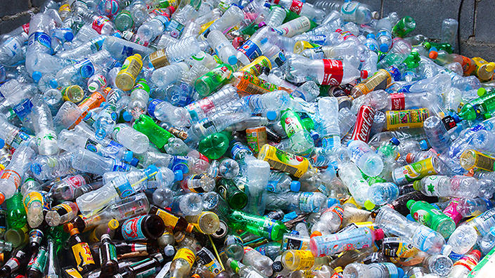
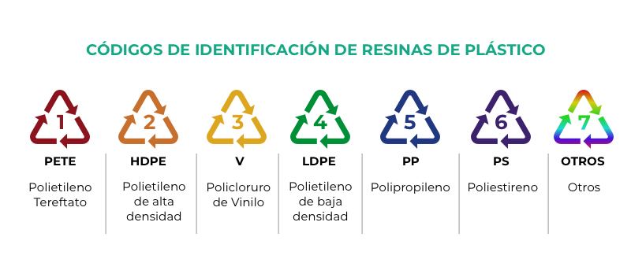

¿Por qué reciclar plástico?
El plástico tarda entre 100 y 1,000 años en descomponerse. Al reciclarlo, reducimos la contaminación, ahorramos energía y evitamos que termine en océanos y ecosistemas naturales.

Pasos para preparar el plástico antes de reciclar
- Lava los envases: Asegúrate de remover cualquier residuo de alimentos o líquidos.
- Retira etiquetas y tapas: Separa las tapas de los envases, ya que pueden ser de materiales distintos.
- Clasifica por tipo: Identifica el código de reciclaje (1 a 7) que suele estar en el envase.
- Compacta los envases: Aplasta botellas y otros plásticos para ahorrar espacio.

Tipos de plástico reciclable
Los plásticos se clasifican según su composición. Los más comunes son:
- PETE (Tipo 1): Botellas de bebidas gaseosas, agua y envases de aceite.
- HDPE (Tipo 2): Envases de leche, detergentes, productos de limpieza y bolsas de supermercado.
- V o PVC (Tipo 3): Envases de productos de limpieza, tuberías y tarjetas de plástico.
- LDPE (Tipo 4): Bolsas de plástico, envoltorios, y botellas exprimibles.
- PP (Tipo 5): Tapas de botellas, envases de yogur y recipientes de alimentos.
- PS (Tipo 6): Vasos desechables, bandejas de comida rápida y envases de espuma (unicel).
- OTROS (Tipo 7): Botellas de policarbonato y materiales mixtos, como envases de alimentos especiales.
¿Dónde llevar el plástico?
Puedes llevar tus plásticos a cualquiera de nuestros Centros de Recolección. Contamos con puntos de acopio en diversas zonas para facilitar el reciclaje.
Beneficios de reciclar plástico
- Reducción de residuos en vertederos y océanos.
- Conservación de recursos naturales.
- Reducción de emisiones de gases de efecto invernadero.
- Creación de nuevos productos sostenibles.